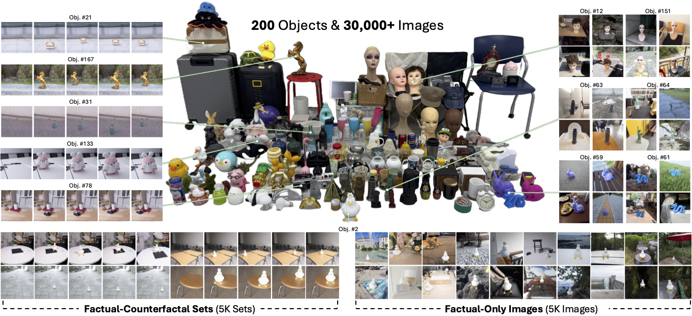
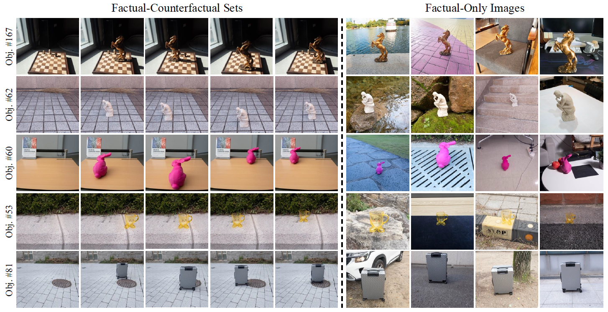
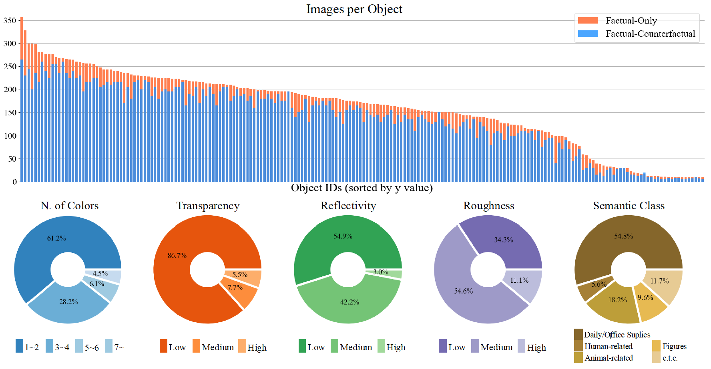

Object compositing, the task of placing and harmonizing objects in images of diverse visual scenes, has become an important task in computer vision with the rise of generative models. However, existing datasets lack the diversity and scale required to comprehensively explore real-world scenarios. We introduce ORIDa (Object-centric Real-world Image Composition Dataset), a large-scale, real-captured dataset containing over 30,000 images featuring 200 unique objects, each of which is presented across varied positions and scenes. ORIDa has two types of data: factual-counterfactual sets and factual-only scenes. The factual-counterfactual sets consist of four factual images showing an object in different positions within a scene and a single counterfactual (or background) image of the scene without the object, resulting in five images per scene. The factual-only scenes include a single image containing an object in a specific context, expanding the variety of environments. To our knowledge, ORIDa is the first publicly available dataset with its scale and complexity for real-world image composition. Extensive analysis and experiments highlight the value of ORIDa as a resource for advancing further research in object compositing.

Factual-Counterfactual (F-CF) Sets and Factual-Only (F-Only) Images. The left side shows F-CF sets, consisting of one background-only image and four object-inserted images captured with the object in different positions. The right side displays F-Only images, which feature objects in diverse scenes without corresponding background-only images.

Dataset statistics per object and attribute. The top chart displays the number of images per object, sorted by y-value, for both factual-only and factual-counterfactual sets. The bottom charts present the percentage distribution of objects based on key attributes: number of colors, transparency, reflectivity, roughness, and semantic class, illustrating the variety and diversity within the dataset.